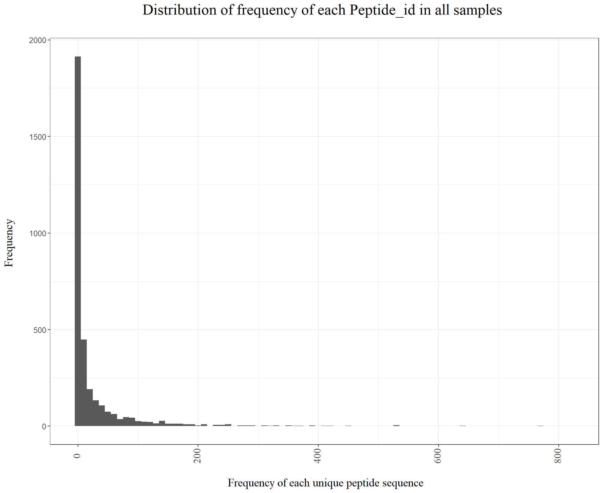

Last updated: 2021-03-18
Checks: 7 0
Knit directory: BH_Diel/
This reproducible R Markdown analysis was created with workflowr (version 1.6.2). The Checks tab describes the reproducibility checks that were applied when the results were created. The Past versions tab lists the development history.
Great! Since the R Markdown file has been committed to the Git repository, you know the exact version of the code that produced these results.
Great job! The global environment was empty. Objects defined in the global environment can affect the analysis in your R Markdown file in unknown ways. For reproduciblity it’s best to always run the code in an empty environment.
The command set.seed(20210222) was run prior to running the code in the R Markdown file. Setting a seed ensures that any results that rely on randomness, e.g. subsampling or permutations, are reproducible.
Great job! Recording the operating system, R version, and package versions is critical for reproducibility.
Nice! There were no cached chunks for this analysis, so you can be confident that you successfully produced the results during this run.
Great job! Using relative paths to the files within your workflowr project makes it easier to run your code on other machines.
Great! You are using Git for version control. Tracking code development and connecting the code version to the results is critical for reproducibility.
The results in this page were generated with repository version fb4d763. See the Past versions tab to see a history of the changes made to the R Markdown and HTML files.
Note that you need to be careful to ensure that all relevant files for the analysis have been committed to Git prior to generating the results (you can use wflow_publish or wflow_git_commit). workflowr only checks the R Markdown file, but you know if there are other scripts or data files that it depends on. Below is the status of the Git repository when the results were generated:
Ignored files:
Ignored: .Rhistory
Ignored: .Rproj.user/
Untracked files:
Untracked: 01_IPTL-CyanoSUMI-MI41M-18OMix-16O-A-T1-BDCL_filtered_PSMs.tsv
Untracked: 01_IPTL-CyanoSUMI-MI41M-18OMix-16O-A-T1-BDCL_filtered_PSMs.xlsx
Untracked: 02_IPTL-CyanoSUMI-MI41M-18OMix-16O-A-T1-DCL_filtered_PSMs.tsv
Untracked: 02_IPTL-CyanoSUMI-MI41M-18OMix-16O-A-T1-DCL_filtered_PSMs.xlsx
Untracked: 03_IPTL-CyanoSUMI-MI41M-18OMix-16O-A-T1-SRF_filtered_PSMs.tsv
Untracked: 03_IPTL-CyanoSUMI-MI41M-18OMix-16O-A-T1-SRF_filtered_PSMs.xlsx
Untracked: 04_IPTL-CyanoSUMI-MI41M-18OMix-16O-A-T2-BDCL_filtered_PSMs.tsv
Untracked: 04_IPTL-CyanoSUMI-MI41M-18OMix-16O-A-T2-BDCL_filtered_PSMs.xlsx
Untracked: 05_IPTL-CyanoSUMI-MI41M-18OMix-16O-A-T2-DCL_filtered_PSMs.tsv
Untracked: 05_IPTL-CyanoSUMI-MI41M-18OMix-16O-A-T2-DCL_filtered_PSMs.xlsx
Untracked: 06_IPTL-CyanoSUMI-MI41M-18OMix-16O-A-T2-SRF_filtered_PSMs.tsv
Untracked: 06_IPTL-CyanoSUMI-MI41M-18OMix-16O-A-T2-SRF_filtered_PSMs.xlsx
Untracked: 07_IPTL-CyanoSUMI-MI41M-18OMix-16O-A-T3-BDCL_filtered_PSMs.tsv
Untracked: 07_IPTL-CyanoSUMI-MI41M-18OMix-16O-A-T3-BDCL_filtered_PSMs.xlsx
Untracked: 08_IPTL-CyanoSUMI-MI41M-18OMix-16O-A-T3-DCL_filtered_PSMs.tsv
Untracked: 08_IPTL-CyanoSUMI-MI41M-18OMix-16O-A-T3-DCL_filtered_PSMs.xlsx
Untracked: 09_IPTL-CyanoSUMI-MI41M-18OMix-16O-A-T3-SRF_filtered_PSMs.tsv
Untracked: 09_IPTL-CyanoSUMI-MI41M-18OMix-16O-A-T3-SRF_filtered_PSMs.xlsx
Untracked: 10_IPTL-CyanoSUMI-MI41M-18OMix-16O-A-T4-BDCL_filtered_PSMs.tsv
Untracked: 10_IPTL-CyanoSUMI-MI41M-18OMix-16O-A-T4-BDCL_filtered_PSMs.xlsx
Untracked: 11_IPTL-CyanoSUMI-MI41M-18OMix-16O-A-T4-DCL_filtered_PSMs.tsv
Untracked: 11_IPTL-CyanoSUMI-MI41M-18OMix-16O-A-T4-DCL_filtered_PSMs.xlsx
Untracked: 12_IPTL-CyanoSUMI-MI41M-18OMix-16O-A-T4-SRF_filtered_PSMs.tsv
Untracked: 12_IPTL-CyanoSUMI-MI41M-18OMix-16O-A-T4-SRF_filtered_PSMs.xlsx
Untracked: 13_IPTL-CyanoSUMI-MI41M-18OMix-16O-A-T5-BDCL_filtered_PSMs.tsv
Untracked: 13_IPTL-CyanoSUMI-MI41M-18OMix-16O-A-T5-BDCL_filtered_PSMs.xlsx
Untracked: 14_IPTL-CyanoSUMI-MI41M-18OMix-16O-A-T5-DCL_filtered_PSMs.tsv
Untracked: 14_IPTL-CyanoSUMI-MI41M-18OMix-16O-A-T5-DCL_filtered_PSMs.xlsx
Untracked: 15_IPTL-CyanoSUMI-MI41M-18OMix-16O-A-T5-SRF_filtered_PSMs.tsv
Untracked: 15_IPTL-CyanoSUMI-MI41M-18OMix-16O-A-T5-SRF_filtered_PSMs.xlsx
Untracked: 16_IPTL-CyanoSUMI-MI41M-18OMix-16O-A-T6-BDCL_filtered_PSMs.tsv
Untracked: 16_IPTL-CyanoSUMI-MI41M-18OMix-16O-A-T6-BDCL_filtered_PSMs.xlsx
Untracked: 17_IPTL-CyanoSUMI-MI41M-18OMix-16O-A-T6-DCL_filtered_PSMs.tsv
Untracked: 17_IPTL-CyanoSUMI-MI41M-18OMix-16O-A-T6-DCL_filtered_PSMs.xlsx
Untracked: 18_IPTL-CyanoSUMI-MI41M-18OMix-16O-A-T6-SRF_filtered_PSMs.tsv
Untracked: 18_IPTL-CyanoSUMI-MI41M-18OMix-16O-A-T6-SRF_filtered_PSMs.xlsx
Untracked: 19_IPTL-CyanoSUMI-MI41M-18OMix-16O-A-T7-DCL_filtered_PSMs.tsv
Untracked: 19_IPTL-CyanoSUMI-MI41M-18OMix-16O-A-T7-DCL_filtered_PSMs.xlsx
Untracked: 20_IPTL-CyanoSUMI-MI41M-18OMix-16O-A-T7-SRF_filtered_PSMs.tsv
Untracked: 20_IPTL-CyanoSUMI-MI41M-18OMix-16O-A-T7-SRF_filtered_PSMs.xlsx
Untracked: 21_IPTL-CyanoSUMI-MI41M-18OMix-16O-A-T8-BDCL_filtered_PSMs.tsv
Untracked: 21_IPTL-CyanoSUMI-MI41M-18OMix-16O-A-T8-BDCL_filtered_PSMs.xlsx
Untracked: 22_IPTL-CyanoSUMI-MI41M-18OMix-16O-A-T8-DCL_filtered_PSMs.tsv
Untracked: 22_IPTL-CyanoSUMI-MI41M-18OMix-16O-A-T8-DCL_filtered_PSMs.xlsx
Untracked: 23_IPTL-CyanoSUMI-MI41M-18OMix-16O-A-T8-SRF_filtered_PSMs.tsv
Untracked: 23_IPTL-CyanoSUMI-MI41M-18OMix-16O-A-T8-SRF_filtered_PSMs.xlsx
Untracked: 24_IPTL-CyanoSUMI-MI41M-18OMix-16O-B-T1-BDCL_filtered_PSMs.tsv
Untracked: 24_IPTL-CyanoSUMI-MI41M-18OMix-16O-B-T1-BDCL_filtered_PSMs.xlsx
Untracked: 25_IPTL-CyanoSUMI-MI41M-18OMix-16O-B-T1-DCL_filtered_PSMs.tsv
Untracked: 25_IPTL-CyanoSUMI-MI41M-18OMix-16O-B-T1-DCL_filtered_PSMs.xlsx
Untracked: 26_IPTL-CyanoSUMI-MI41M-18OMix-16O-B-T1-SRF_filtered_PSMs.tsv
Untracked: 26_IPTL-CyanoSUMI-MI41M-18OMix-16O-B-T1-SRF_filtered_PSMs.xlsx
Untracked: 27_IPTL-CyanoSUMI-MI41M-18OMix-16O-B-T2-BDCL_filtered_PSMs.tsv
Untracked: 27_IPTL-CyanoSUMI-MI41M-18OMix-16O-B-T2-BDCL_filtered_PSMs.xlsx
Untracked: 28_IPTL-CyanoSUMI-MI41M-18OMix-16O-B-T2-DCL_filtered_PSMs.tsv
Untracked: 28_IPTL-CyanoSUMI-MI41M-18OMix-16O-B-T2-DCL_filtered_PSMs.xlsx
Untracked: 29_IPTL-CyanoSUMI-MI41M-18OMix-16O-B-T2-SRF_filtered_PSMs.tsv
Untracked: 29_IPTL-CyanoSUMI-MI41M-18OMix-16O-B-T2-SRF_filtered_PSMs.xlsx
Untracked: 30_IPTL-CyanoSUMI-MI41M-18OMix-16O-B-T3-BDCL_filtered_PSMs.tsv
Untracked: 30_IPTL-CyanoSUMI-MI41M-18OMix-16O-B-T3-BDCL_filtered_PSMs.xlsx
Untracked: 31_IPTL-CyanoSUMI-MI41M-18OMix-16O-B-T3-DCL_filtered_PSMs.tsv
Untracked: 31_IPTL-CyanoSUMI-MI41M-18OMix-16O-B-T3-DCL_filtered_PSMs.xlsx
Untracked: 32_IPTL-CyanoSUMI-MI41M-18OMix-16O-B-T3-SRF_filtered_PSMs.tsv
Untracked: 32_IPTL-CyanoSUMI-MI41M-18OMix-16O-B-T3-SRF_filtered_PSMs.xlsx
Untracked: 33_IPTL-CyanoSUMI-MI41M-18OMix-16O-B-T4-BDCL_filtered_PSMs.tsv
Untracked: 33_IPTL-CyanoSUMI-MI41M-18OMix-16O-B-T4-BDCL_filtered_PSMs.xlsx
Untracked: 34_IPTL-CyanoSUMI-MI41M-18OMix-16O-B-T4-DCL_filtered_PSMs.tsv
Untracked: 34_IPTL-CyanoSUMI-MI41M-18OMix-16O-B-T4-DCL_filtered_PSMs.xlsx
Untracked: 35_IPTL-CyanoSUMI-MI41M-18OMix-16O-B-T4-SRF_filtered_PSMs.tsv
Untracked: 35_IPTL-CyanoSUMI-MI41M-18OMix-16O-B-T4-SRF_filtered_PSMs.xlsx
Untracked: 36_IPTL-CyanoSUMI-MI41M-18OMix-16O-B-T5-BDCL_filtered_PSMs.tsv
Untracked: 36_IPTL-CyanoSUMI-MI41M-18OMix-16O-B-T5-BDCL_filtered_PSMs.xlsx
Untracked: 37_IPTL-CyanoSUMI-MI41M-18OMix-16O-B-T5-DCL_filtered_PSMs.tsv
Untracked: 37_IPTL-CyanoSUMI-MI41M-18OMix-16O-B-T5-DCL_filtered_PSMs.xlsx
Untracked: 38_IPTL-CyanoSUMI-MI41M-18OMix-16O-B-T5-SRF_filtered_PSMs.tsv
Untracked: 38_IPTL-CyanoSUMI-MI41M-18OMix-16O-B-T5-SRF_filtered_PSMs.xlsx
Untracked: 39_IPTL-CyanoSUMI-MI41M-18OMix-16O-B-T6-BDCL_filtered_PSMs.tsv
Untracked: 39_IPTL-CyanoSUMI-MI41M-18OMix-16O-B-T6-BDCL_filtered_PSMs.xlsx
Untracked: 40_IPTL-CyanoSUMI-MI41M-18OMix-16O-B-T6-DCL_filtered_PSMs.tsv
Untracked: 40_IPTL-CyanoSUMI-MI41M-18OMix-16O-B-T6-DCL_filtered_PSMs.xlsx
Untracked: 41_IPTL-CyanoSUMI-MI41M-18OMix-16O-B-T6-SRF_filtered_PSMs.tsv
Untracked: 41_IPTL-CyanoSUMI-MI41M-18OMix-16O-B-T6-SRF_filtered_PSMs.xlsx
Untracked: 42_IPTL-CyanoSUMI-MI41M-18OMix-16O-B-T7-BDCL_filtered_PSMs.tsv
Untracked: 42_IPTL-CyanoSUMI-MI41M-18OMix-16O-B-T7-BDCL_filtered_PSMs.xlsx
Untracked: 43_IPTL-CyanoSUMI-MI41M-18OMix-16O-B-T7-DCL_filtered_PSMs.tsv
Untracked: 43_IPTL-CyanoSUMI-MI41M-18OMix-16O-B-T7-DCL_filtered_PSMs.xlsx
Untracked: 44_IPTL-CyanoSUMI-MI41M-18OMix-16O-B-T7-SRF_filtered_PSMs.tsv
Untracked: 44_IPTL-CyanoSUMI-MI41M-18OMix-16O-B-T7-SRF_filtered_PSMs.xlsx
Untracked: 45_IPTL-CyanoSUMI-MI41M-18OMix-16O-B-T8-BDCL_filtered_PSMs.tsv
Untracked: 45_IPTL-CyanoSUMI-MI41M-18OMix-16O-B-T8-BDCL_filtered_PSMs.xlsx
Untracked: 46_IPTL-CyanoSUMI-MI41M-18OMix-16O-B-T8-DCL_filtered_PSMs.tsv
Untracked: 46_IPTL-CyanoSUMI-MI41M-18OMix-16O-B-T8-DCL_filtered_PSMs.xlsx
Untracked: 47_IPTL-CyanoSUMI-MI41M-18OMix-16O-B-T8-SRF_filtered_PSMs.tsv
Untracked: 47_IPTL-CyanoSUMI-MI41M-18OMix-16O-B-T8-SRF_filtered_PSMs.xlsx
Untracked: 48_IPTL-CyanoSUMI-MI41M-18OMix-16O-C-T1-BDCL_filtered_PSMs.tsv
Untracked: 48_IPTL-CyanoSUMI-MI41M-18OMix-16O-C-T1-BDCL_filtered_PSMs.xlsx
Untracked: 49_IPTL-CyanoSUMI-MI41M-18OMix-16O-C-T1-DCL_filtered_PSMs.tsv
Untracked: 49_IPTL-CyanoSUMI-MI41M-18OMix-16O-C-T1-DCL_filtered_PSMs.xlsx
Untracked: 50_IPTL-CyanoSUMI-MI41M-18OMix-16O-C-T1-SRF_filtered_PSMs.tsv
Untracked: 50_IPTL-CyanoSUMI-MI41M-18OMix-16O-C-T1-SRF_filtered_PSMs.xlsx
Untracked: 51_IPTL-CyanoSUMI-MI41M-18OMix-16O-C-T3-BDCL_filtered_PSMs.tsv
Untracked: 51_IPTL-CyanoSUMI-MI41M-18OMix-16O-C-T3-BDCL_filtered_PSMs.xlsx
Untracked: 52_IPTL-CyanoSUMI-MI41M-18OMix-16O-C-T3-DCL_filtered_PSMs.tsv
Untracked: 52_IPTL-CyanoSUMI-MI41M-18OMix-16O-C-T3-DCL_filtered_PSMs.xlsx
Untracked: 53_IPTL-CyanoSUMI-MI41M-18OMix-16O-C-T3-SRF_filtered_PSMs.tsv
Untracked: 53_IPTL-CyanoSUMI-MI41M-18OMix-16O-C-T3-SRF_filtered_PSMs.xlsx
Untracked: 54_IPTL-CyanoSUMI-MI41M-18OMix-16O-C-T4-BDCL_filtered_PSMs.tsv
Untracked: 54_IPTL-CyanoSUMI-MI41M-18OMix-16O-C-T4-BDCL_filtered_PSMs.xlsx
Untracked: 55_IPTL-CyanoSUMI-MI41M-18OMix-16O-C-T4-DCL_filtered_PSMs.tsv
Untracked: 55_IPTL-CyanoSUMI-MI41M-18OMix-16O-C-T4-DCL_filtered_PSMs.xlsx
Untracked: 56_IPTL-CyanoSUMI-MI41M-18OMix-16O-C-T4-SRF_filtered_PSMs.tsv
Untracked: 56_IPTL-CyanoSUMI-MI41M-18OMix-16O-C-T4-SRF_filtered_PSMs.xlsx
Untracked: 57_IPTL-CyanoSUMI-MI41M-18OMix-16O-C-T5-BDCL_filtered_PSMs.tsv
Untracked: 57_IPTL-CyanoSUMI-MI41M-18OMix-16O-C-T5-BDCL_filtered_PSMs.xlsx
Untracked: 58_IPTL-CyanoSUMI-MI41M-18OMix-16O-C-T5-DCL_filtered_PSMs.tsv
Untracked: 58_IPTL-CyanoSUMI-MI41M-18OMix-16O-C-T5-DCL_filtered_PSMs.xlsx
Untracked: 59_IPTL-CyanoSUMI-MI41M-18OMix-16O-C-T5-SRF_filtered_PSMs.tsv
Untracked: 59_IPTL-CyanoSUMI-MI41M-18OMix-16O-C-T5-SRF_filtered_PSMs.xlsx
Untracked: 60_IPTL-CyanoSUMI-MI41M-18OMix-16O-C-T6-BDCL_filtered_PSMs.tsv
Untracked: 60_IPTL-CyanoSUMI-MI41M-18OMix-16O-C-T6-BDCL_filtered_PSMs.xlsx
Untracked: 61_IPTL-CyanoSUMI-MI41M-18OMix-16O-C-T6-DCL_filtered_PSMs.tsv
Untracked: 61_IPTL-CyanoSUMI-MI41M-18OMix-16O-C-T6-DCL_filtered_PSMs.xlsx
Untracked: 62_IPTL-CyanoSUMI-MI41M-18OMix-16O-C-T6-SRF_filtered_PSMs.tsv
Untracked: 62_IPTL-CyanoSUMI-MI41M-18OMix-16O-C-T6-SRF_filtered_PSMs.xlsx
Untracked: 63_IPTL-CyanoSUMI-MI41M-18OMix-16O-C-T7-BDCL_filtered_PSMs.tsv
Untracked: 63_IPTL-CyanoSUMI-MI41M-18OMix-16O-C-T7-BDCL_filtered_PSMs.xlsx
Untracked: 64_IPTL-CyanoSUMI-MI41M-18OMix-16O-C-T7-DCL_filtered_PSMs.tsv
Untracked: 64_IPTL-CyanoSUMI-MI41M-18OMix-16O-C-T7-DCL_filtered_PSMs.xlsx
Untracked: 65_IPTL-CyanoSUMI-MI41M-18OMix-16O-C-T8-BDCL_filtered_PSMs.tsv
Untracked: 65_IPTL-CyanoSUMI-MI41M-18OMix-16O-C-T8-BDCL_filtered_PSMs.xlsx
Untracked: 66_IPTL-CyanoSUMI-MI41M-18OMix-16O-C-T8-DCL_filtered_PSMs.tsv
Untracked: 66_IPTL-CyanoSUMI-MI41M-18OMix-16O-C-T8-DCL_filtered_PSMs.xlsx
Untracked: 67_IPTL-CyanoSUMI-MI41M-18OMix-16O-C-T8-SRF_filtered_PSMs.tsv
Untracked: 67_IPTL-CyanoSUMI-MI41M-18OMix-16O-C-T8-SRF_filtered_PSMs.xlsx
Untracked: Depth_tax_12_15.pdf
Untracked: Hist_freq_of_peptide_id.pdf
Untracked: Hist_intensity_replicate_centered.pdf
Untracked: Hist_intensity_replicate_not_centered.pdf
Untracked: Hist_intensity_spec_level_centered.pdf
Untracked: Hist_intensity_spec_level_not_centered.pdf
Untracked: Hist_number of timepoints_peptide_appears.pdf
Untracked: P1_number_unique_peptide_per_sample.pdf
Untracked: P2_number_of_cumulative_unique_peptides.pdf
Untracked: Peptide_id.tsv
Untracked: Replicate_ABC50_combined.tsv
Untracked: Replicate_ABC50_combined.xlsx
Untracked: Replicate_ABC63_combined.tsv
Untracked: Replicate_ABC63_combined.xlsx
Untracked: Replicate_ABC67_combined.tsv
Untracked: Replicate_ABC67_combined.xlsx
Untracked: Replicate_BC_combined.tsv
Untracked: Replicate_BC_combined.xlsx
Untracked: Replicate_B_combined.tsv
Untracked: Replicate_B_combined.xlsx
Untracked: SRF_Genus_15_18.pdf
Untracked: SRF_family_12_15.pdf
Untracked: SRF_order_12_15.pdf
Untracked: Tax_strain.pdf
Untracked: Tax_strain_24_31.pdf
Untracked: Taxonomy_for_rhythmic_peptide.pdf
Untracked: Taxonomy_genus.pdf
Untracked: Taxonomy_order.pdf
Untracked: Taxonomy_phylum.pdf
Untracked: Taxonomy_species.pdf
Untracked: Taxonomy_strain.pdf
Untracked: Taxonoy_family.pdf
Untracked: Time_series_intesity_all.pdf
Untracked: data/Final_pep_seq_ORF_rankedlineage.tsv
Untracked: data/Time_metadata.txt
Untracked: data/counts_example.csv
Untracked: data/diel-Feb21/
Untracked: data/diel-Feb25/
Untracked: data/diel-Feb26/
Untracked: data/diel-Mar2/
Untracked: data/synthetic_control.data.txt
Untracked: hclust_DTW_average_wide.pdf
Untracked: hclust_DTW_average_wide_after_normalization.pdf
Note that any generated files, e.g. HTML, png, CSS, etc., are not included in this status report because it is ok for generated content to have uncommitted changes.
These are the previous versions of the repository in which changes were made to the R Markdown (analysis/convert_tsv_to_dataframe.Rmd) and HTML (docs/convert_tsv_to_dataframe.html) files. If you’ve configured a remote Git repository (see ?wflow_git_remote), click on the hyperlinks in the table below to view the files as they were in that past version.
| File | Version | Author | Date | Message |
|---|---|---|---|---|
| Rmd | fb4d763 | KiseokUchicago | 2021-03-18 | Rmd total upgrade |
| html | 3ca3689 | KiseokUchicago | 2021-03-10 | Build site. |
| Rmd | 3b32cf6 | KiseokUchicago | 2021-03-10 | important |
| html | 0a00f13 | KiseokUchicago | 2021-03-08 | Build site. |
| Rmd | 52d2f3c | KiseokUchicago | 2021-03-08 | reversed intensity and centered by subtracting median |
| html | 52cb184 | KiseokUchicago | 2021-03-02 | Build site. |
| Rmd | 7f26b0f | KiseokUchicago | 2021-03-02 | update |
| html | c2f25d3 | KiseokUchicago | 2021-02-26 | Build site. |
| Rmd | c5ec37e | KiseokUchicago | 2021-02-26 | total 50 samples |
| html | 3db29b0 | KiseokUchicago | 2021-02-23 | Build site. |
| Rmd | fe508d1 | KiseokUchicago | 2021-02-23 | publish |
| html | e55579c | KiseokUchicago | 2021-02-23 | Build site. |
| Rmd | 44eb05f | KiseokUchicago | 2021-02-23 | publish |
| html | 12b2c74 | KiseokUchicago | 2021-02-22 | Build site. |
| html | c4cbcd2 | KiseokUchicago | 2021-02-22 | Build site. |
| Rmd | 7830f00 | KiseokUchicago | 2021-02-22 | publish |
| html | 366e63a | KiseokUchicago | 2021-02-22 | Build site. |
| Rmd | 9935449 | KiseokUchicago | 2021-02-22 | publish |
| html | f7aefb0 | KiseokUchicago | 2021-02-22 | Build site. |
| Rmd | 6b63e24 | KiseokUchicago | 2021-02-22 | publish |
| html | 6ea68a2 | KiseokUchicago | 2021-02-22 | Build site. |
| Rmd | f5d311b | KiseokUchicago | 2021-02-22 | publish |
It is very important to change I to L.
# libraries
library(dplyr)
library(tidyr)
library(stringr)
library(ggplot2)
# Make the desirable format
df <- read.csv(file='data/diel-Mar2/IPTL-CyanoSUMI-MI41M-18OMix-16O-B-T1-BDCL_filtered_PSMs.tsv', sep = '\t')
df <- tibble::rownames_to_column(df, var = 'Index')
df2 <- df %>% select(Index,Scan.Number, Base.Peptide.Sequence, log2.18O.16O.Ratio, Target., Decoy.)
# change I to L
sum(grepl("I", df2$Base.Peptide.Sequence))[1] 892df2$Base.Peptide.Sequence <- gsub("I","L",df2$Base.Peptide.Sequence)
sum(grepl("I", df2$Base.Peptide.Sequence))[1] 0df3 <- df2 %>% separate(Scan.Number, into = c('dir',"file_name"), sep = 'IPTL-')
colnames(df3)[1] "Index" "dir" "file_name"
[4] "Base.Peptide.Sequence" "log2.18O.16O.Ratio" "Target."
[7] "Decoy." df4 <- df3 %>% select(-dir)
colnames(df4)[1] "Index" "file_name" "Base.Peptide.Sequence"
[4] "log2.18O.16O.Ratio" "Target." "Decoy." df5 <- df4 %>% separate(file_name, sep=';', into= c('IPT','SpectrumID','ScanID'))
head(df5) Index IPT SpectrumID
1 1 CyanoSUMI-MI41M-18OMix-16O-B-T1-BDCL.raw SpectrumID: 49728
2 2 CyanoSUMI-MI41M-18OMix-16O-B-T1-BDCL.raw SpectrumID: 42413
3 3 CyanoSUMI-MI41M-18OMix-16O-B-T1-BDCL.raw SpectrumID: 43799
4 4 CyanoSUMI-MI41M-18OMix-16O-B-T1-BDCL.raw SpectrumID: 41495
5 5 CyanoSUMI-MI41M-18OMix-16O-B-T1-BDCL.raw SpectrumID: 42258
6 6 CyanoSUMI-MI41M-18OMix-16O-B-T1-BDCL.raw SpectrumID: 49943
ScanID Base.Peptide.Sequence log2.18O.16O.Ratio Target. Decoy.
1 scans: 56549 LLSENVDALLGAASSGVSLK -0.60046965 True False
2 scans: 48736 SVFVNQASSEGLGQALAK -0.09393621 True False
3 scans: 50215 EELASVASLSAADTELGR -1.17728746 True False
4 scans: 47756 GQADLGLLGSTAGTQLNR -0.82806202 True False
5 scans: 48571 SVFVNQASSEGLGQALAK -1.05946785 True False
6 scans: 56779 AMLQDLAVLTGGTVLTDELGR -0.70018147 True False# remove unwanted substrings
df5$IPT <- str_remove(df5$IPT, '.raw')
df5$SpectrumID <- str_remove(df5$SpectrumID, ' SpectrumID: ')
df5$ScanID <- str_remove(df5$ScanID, ' scans: ')
head(df5$ScanID) # watch out for the space in front[1] "56549" "48736" "50215" "47756" "48571" "56779"df6 <- df5 %>% separate(IPT,into=c('Cruise','Station','Isotope','16O','Replicate','Time','Depth'),sep='-') %>% select(-`16O`)
colnames(df6) [1] "Index" "Cruise" "Station"
[4] "Isotope" "Replicate" "Time"
[7] "Depth" "SpectrumID" "ScanID"
[10] "Base.Peptide.Sequence" "log2.18O.16O.Ratio" "Target."
[13] "Decoy." df7 <- df6 %>% unite(c('Depth','Time','Replicate','ScanID'),col=Spec_id, remove=F)
df7 <- df7 %>% unite(c('Depth','Time','Replicate'),col=SampleID, remove=F)
head(df7) Index Cruise Station Isotope Spec_id SampleID Replicate Time
1 1 CyanoSUMI MI41M 18OMix BDCL_T1_B_56549 BDCL_T1_B B T1
2 2 CyanoSUMI MI41M 18OMix BDCL_T1_B_48736 BDCL_T1_B B T1
3 3 CyanoSUMI MI41M 18OMix BDCL_T1_B_50215 BDCL_T1_B B T1
4 4 CyanoSUMI MI41M 18OMix BDCL_T1_B_47756 BDCL_T1_B B T1
5 5 CyanoSUMI MI41M 18OMix BDCL_T1_B_48571 BDCL_T1_B B T1
6 6 CyanoSUMI MI41M 18OMix BDCL_T1_B_56779 BDCL_T1_B B T1
Depth SpectrumID ScanID Base.Peptide.Sequence log2.18O.16O.Ratio Target.
1 BDCL 49728 56549 LLSENVDALLGAASSGVSLK -0.60046965 True
2 BDCL 42413 48736 SVFVNQASSEGLGQALAK -0.09393621 True
3 BDCL 43799 50215 EELASVASLSAADTELGR -1.17728746 True
4 BDCL 41495 47756 GQADLGLLGSTAGTQLNR -0.82806202 True
5 BDCL 42258 48571 SVFVNQASSEGLGQALAK -1.05946785 True
6 BDCL 49943 56779 AMLQDLAVLTGGTVLTDELGR -0.70018147 True
Decoy.
1 False
2 False
3 False
4 False
5 False
6 False# important to reverse the ratio
df8 <- df7 %>% mutate(log2.16O.18O.Ratio = -log2.18O.16O.Ratio)
# Arrange column order
df9 <- df8 %>% select(Spec_id, Base.Peptide.Sequence, log2.16O.18O.Ratio,SampleID,Index,Cruise,Station,Isotope, Replicate, Time, Depth, SpectrumID, ScanID, Target., Decoy.)
head(df9) Spec_id Base.Peptide.Sequence log2.16O.18O.Ratio SampleID Index
1 BDCL_T1_B_56549 LLSENVDALLGAASSGVSLK 0.60046965 BDCL_T1_B 1
2 BDCL_T1_B_48736 SVFVNQASSEGLGQALAK 0.09393621 BDCL_T1_B 2
3 BDCL_T1_B_50215 EELASVASLSAADTELGR 1.17728746 BDCL_T1_B 3
4 BDCL_T1_B_47756 GQADLGLLGSTAGTQLNR 0.82806202 BDCL_T1_B 4
5 BDCL_T1_B_48571 SVFVNQASSEGLGQALAK 1.05946785 BDCL_T1_B 5
6 BDCL_T1_B_56779 AMLQDLAVLTGGTVLTDELGR 0.70018147 BDCL_T1_B 6
Cruise Station Isotope Replicate Time Depth SpectrumID ScanID Target.
1 CyanoSUMI MI41M 18OMix B T1 BDCL 49728 56549 True
2 CyanoSUMI MI41M 18OMix B T1 BDCL 42413 48736 True
3 CyanoSUMI MI41M 18OMix B T1 BDCL 43799 50215 True
4 CyanoSUMI MI41M 18OMix B T1 BDCL 41495 47756 True
5 CyanoSUMI MI41M 18OMix B T1 BDCL 42258 48571 True
6 CyanoSUMI MI41M 18OMix B T1 BDCL 49943 56779 True
Decoy.
1 False
2 False
3 False
4 False
5 False
6 False# screen and remove Decoy = True
df10 <- df9 %>% filter(Decoy.=='False')
# confirm
df10[df10$Decoy.=='True',] [1] Spec_id Base.Peptide.Sequence log2.16O.18O.Ratio
[4] SampleID Index Cruise
[7] Station Isotope Replicate
[10] Time Depth SpectrumID
[13] ScanID Target. Decoy.
<0 rows> (or 0-length row.names)# subtract median the intensity after filtering => output change to cent.log2.16O.18O.Ratio (centered)
median(df10$log2.16O.18O.Ratio)[1] 0.6346337df11 <- df10 %>% mutate(cent.log2.16O.18O.Ratio = log2.16O.18O.Ratio - median(df10$log2.16O.18O.Ratio)) %>%
select(Spec_id, Base.Peptide.Sequence, log2.16O.18O.Ratio,cent.log2.16O.18O.Ratio, SampleID,Index,Cruise,Station,Isotope, Replicate, Time, Depth, SpectrumID, ScanID, Target., Decoy.)
# final form
head(df11) Spec_id Base.Peptide.Sequence log2.16O.18O.Ratio
1 BDCL_T1_B_56549 LLSENVDALLGAASSGVSLK 0.60046965
2 BDCL_T1_B_48736 SVFVNQASSEGLGQALAK 0.09393621
3 BDCL_T1_B_50215 EELASVASLSAADTELGR 1.17728746
4 BDCL_T1_B_47756 GQADLGLLGSTAGTQLNR 0.82806202
5 BDCL_T1_B_48571 SVFVNQASSEGLGQALAK 1.05946785
6 BDCL_T1_B_56779 AMLQDLAVLTGGTVLTDELGR 0.70018147
cent.log2.16O.18O.Ratio SampleID Index Cruise Station Isotope Replicate
1 -0.03416409 BDCL_T1_B 1 CyanoSUMI MI41M 18OMix B
2 -0.54069753 BDCL_T1_B 2 CyanoSUMI MI41M 18OMix B
3 0.54265372 BDCL_T1_B 3 CyanoSUMI MI41M 18OMix B
4 0.19342828 BDCL_T1_B 4 CyanoSUMI MI41M 18OMix B
5 0.42483411 BDCL_T1_B 5 CyanoSUMI MI41M 18OMix B
6 0.06554773 BDCL_T1_B 6 CyanoSUMI MI41M 18OMix B
Time Depth SpectrumID ScanID Target. Decoy.
1 T1 BDCL 49728 56549 True False
2 T1 BDCL 42413 48736 True False
3 T1 BDCL 43799 50215 True False
4 T1 BDCL 41495 47756 True False
5 T1 BDCL 42258 48571 True False
6 T1 BDCL 49943 56779 True Falselibrary(openxlsx)
# define function
convert_tsv <- function(file_number, filename){
# Make the desirable format
df <- read.csv(file=paste0(directory_path,"/" ,filename), sep = '\t')
df <- tibble::rownames_to_column(df, var = 'Index')
df2 <- df %>% select(Index,Scan.Number, Base.Peptide.Sequence, log2.18O.16O.Ratio, Target., Decoy.)
# change I to L
df2$Base.Peptide.Sequence <- gsub("I","L",df2$Base.Peptide.Sequence)
df3 <- df2 %>% separate(Scan.Number, into = c('dir',"file_name"), sep = 'IPTL-')
colnames(df3)
df4 <- df3 %>% select(-dir)
colnames(df4)
df5 <- df4 %>% separate(file_name, sep=';', into= c('IPT','SpectrumID','ScanID'))
head(df5)
# remove unwanted substrings
df5$IPT <- str_remove(df5$IPT, '.raw')
df5$SpectrumID <- str_remove(df5$SpectrumID, ' SpectrumID: ')
df5$ScanID <- str_remove(df5$ScanID, ' scans: ')
head(df5$ScanID) # watch out for the space in front
df6 <- df5 %>% separate(IPT,into=c('Cruise','Station','Isotope','16O','Replicate','Time','Depth'),sep='-') %>% select(-`16O`)
colnames(df6)
df7 <- df6 %>% unite(c('Depth','Time','Replicate','ScanID'),col=Spec_id, remove=F)
df7 <- df7 %>% unite(c('Depth','Time','Replicate'),col=SampleID, remove=F)
head(df7)
# important to reverse the ratio
df8 <- df7 %>% mutate(log2.16O.18O.Ratio = -log2.18O.16O.Ratio)
# Arrange column order
df9 <- df8 %>% select(Spec_id, Base.Peptide.Sequence, log2.16O.18O.Ratio,SampleID,Index,Cruise,Station,Isotope, Replicate, Time, Depth, SpectrumID, ScanID, Target., Decoy.)
head(df9)
# screen and remove Decoy = True
df10 <- df9 %>% filter(Decoy.=='False')
# confirm
df10[df10$Decoy.=='True',]
# subtract median the intensity after filtering => output change to cent.log2.16O.18O.Ratio (centered)
median(df10$log2.16O.18O.Ratio)
df11 <- df10 %>% mutate(cent.log2.16O.18O.Ratio = log2.16O.18O.Ratio - median(df10$log2.16O.18O.Ratio)) %>%
select(Spec_id, Base.Peptide.Sequence, log2.16O.18O.Ratio,cent.log2.16O.18O.Ratio, SampleID,Index,Cruise,Station,Isotope, Replicate, Time, Depth, SpectrumID, ScanID, Target., Decoy.)
# final form
head(df11)
write.table(df11,file=paste0(file_number,'_',filename), sep='\t',row.names = F)
openxlsx::write.xlsx(df11,paste0(file_number,'_',str_remove(filename,'.tsv'),'.xlsx'),rowNames=F)
}
# list all files in certain folder
directory_path = "data/diel-Mar2"
list_f <- list.files(path="data/diel-Mar2")
length(list_f)[1] 67# test example
# convert_tsv('01','IPTL-CyanoSUMI-MI41M-18OMix-16O-B-T1-BDCL_filtered_PSMs.tsv')
# make file name starting from 01, 02,
vec_00 <- sprintf("%02d", c(1:length(list_f)))
# loop through files and convert
for (i in c(1:length(list_f))){
print(i)
print(list_f[i])
convert_tsv(vec_00[i], list_f[i])
}[1] 1
[1] "IPTL-CyanoSUMI-MI41M-18OMix-16O-A-T1-BDCL_filtered_PSMs.tsv"
[1] 2
[1] "IPTL-CyanoSUMI-MI41M-18OMix-16O-A-T1-DCL_filtered_PSMs.tsv"
[1] 3
[1] "IPTL-CyanoSUMI-MI41M-18OMix-16O-A-T1-SRF_filtered_PSMs.tsv"
[1] 4
[1] "IPTL-CyanoSUMI-MI41M-18OMix-16O-A-T2-BDCL_filtered_PSMs.tsv"
[1] 5
[1] "IPTL-CyanoSUMI-MI41M-18OMix-16O-A-T2-DCL_filtered_PSMs.tsv"
[1] 6
[1] "IPTL-CyanoSUMI-MI41M-18OMix-16O-A-T2-SRF_filtered_PSMs.tsv"
[1] 7
[1] "IPTL-CyanoSUMI-MI41M-18OMix-16O-A-T3-BDCL_filtered_PSMs.tsv"
[1] 8
[1] "IPTL-CyanoSUMI-MI41M-18OMix-16O-A-T3-DCL_filtered_PSMs.tsv"
[1] 9
[1] "IPTL-CyanoSUMI-MI41M-18OMix-16O-A-T3-SRF_filtered_PSMs.tsv"
[1] 10
[1] "IPTL-CyanoSUMI-MI41M-18OMix-16O-A-T4-BDCL_filtered_PSMs.tsv"
[1] 11
[1] "IPTL-CyanoSUMI-MI41M-18OMix-16O-A-T4-DCL_filtered_PSMs.tsv"
[1] 12
[1] "IPTL-CyanoSUMI-MI41M-18OMix-16O-A-T4-SRF_filtered_PSMs.tsv"
[1] 13
[1] "IPTL-CyanoSUMI-MI41M-18OMix-16O-A-T5-BDCL_filtered_PSMs.tsv"
[1] 14
[1] "IPTL-CyanoSUMI-MI41M-18OMix-16O-A-T5-DCL_filtered_PSMs.tsv"
[1] 15
[1] "IPTL-CyanoSUMI-MI41M-18OMix-16O-A-T5-SRF_filtered_PSMs.tsv"
[1] 16
[1] "IPTL-CyanoSUMI-MI41M-18OMix-16O-A-T6-BDCL_filtered_PSMs.tsv"
[1] 17
[1] "IPTL-CyanoSUMI-MI41M-18OMix-16O-A-T6-DCL_filtered_PSMs.tsv"
[1] 18
[1] "IPTL-CyanoSUMI-MI41M-18OMix-16O-A-T6-SRF_filtered_PSMs.tsv"
[1] 19
[1] "IPTL-CyanoSUMI-MI41M-18OMix-16O-A-T7-DCL_filtered_PSMs.tsv"
[1] 20
[1] "IPTL-CyanoSUMI-MI41M-18OMix-16O-A-T7-SRF_filtered_PSMs.tsv"
[1] 21
[1] "IPTL-CyanoSUMI-MI41M-18OMix-16O-A-T8-BDCL_filtered_PSMs.tsv"
[1] 22
[1] "IPTL-CyanoSUMI-MI41M-18OMix-16O-A-T8-DCL_filtered_PSMs.tsv"
[1] 23
[1] "IPTL-CyanoSUMI-MI41M-18OMix-16O-A-T8-SRF_filtered_PSMs.tsv"
[1] 24
[1] "IPTL-CyanoSUMI-MI41M-18OMix-16O-B-T1-BDCL_filtered_PSMs.tsv"
[1] 25
[1] "IPTL-CyanoSUMI-MI41M-18OMix-16O-B-T1-DCL_filtered_PSMs.tsv"
[1] 26
[1] "IPTL-CyanoSUMI-MI41M-18OMix-16O-B-T1-SRF_filtered_PSMs.tsv"
[1] 27
[1] "IPTL-CyanoSUMI-MI41M-18OMix-16O-B-T2-BDCL_filtered_PSMs.tsv"
[1] 28
[1] "IPTL-CyanoSUMI-MI41M-18OMix-16O-B-T2-DCL_filtered_PSMs.tsv"
[1] 29
[1] "IPTL-CyanoSUMI-MI41M-18OMix-16O-B-T2-SRF_filtered_PSMs.tsv"
[1] 30
[1] "IPTL-CyanoSUMI-MI41M-18OMix-16O-B-T3-BDCL_filtered_PSMs.tsv"
[1] 31
[1] "IPTL-CyanoSUMI-MI41M-18OMix-16O-B-T3-DCL_filtered_PSMs.tsv"
[1] 32
[1] "IPTL-CyanoSUMI-MI41M-18OMix-16O-B-T3-SRF_filtered_PSMs.tsv"
[1] 33
[1] "IPTL-CyanoSUMI-MI41M-18OMix-16O-B-T4-BDCL_filtered_PSMs.tsv"
[1] 34
[1] "IPTL-CyanoSUMI-MI41M-18OMix-16O-B-T4-DCL_filtered_PSMs.tsv"
[1] 35
[1] "IPTL-CyanoSUMI-MI41M-18OMix-16O-B-T4-SRF_filtered_PSMs.tsv"
[1] 36
[1] "IPTL-CyanoSUMI-MI41M-18OMix-16O-B-T5-BDCL_filtered_PSMs.tsv"
[1] 37
[1] "IPTL-CyanoSUMI-MI41M-18OMix-16O-B-T5-DCL_filtered_PSMs.tsv"
[1] 38
[1] "IPTL-CyanoSUMI-MI41M-18OMix-16O-B-T5-SRF_filtered_PSMs.tsv"
[1] 39
[1] "IPTL-CyanoSUMI-MI41M-18OMix-16O-B-T6-BDCL_filtered_PSMs.tsv"
[1] 40
[1] "IPTL-CyanoSUMI-MI41M-18OMix-16O-B-T6-DCL_filtered_PSMs.tsv"
[1] 41
[1] "IPTL-CyanoSUMI-MI41M-18OMix-16O-B-T6-SRF_filtered_PSMs.tsv"
[1] 42
[1] "IPTL-CyanoSUMI-MI41M-18OMix-16O-B-T7-BDCL_filtered_PSMs.tsv"
[1] 43
[1] "IPTL-CyanoSUMI-MI41M-18OMix-16O-B-T7-DCL_filtered_PSMs.tsv"
[1] 44
[1] "IPTL-CyanoSUMI-MI41M-18OMix-16O-B-T7-SRF_filtered_PSMs.tsv"
[1] 45
[1] "IPTL-CyanoSUMI-MI41M-18OMix-16O-B-T8-BDCL_filtered_PSMs.tsv"
[1] 46
[1] "IPTL-CyanoSUMI-MI41M-18OMix-16O-B-T8-DCL_filtered_PSMs.tsv"
[1] 47
[1] "IPTL-CyanoSUMI-MI41M-18OMix-16O-B-T8-SRF_filtered_PSMs.tsv"
[1] 48
[1] "IPTL-CyanoSUMI-MI41M-18OMix-16O-C-T1-BDCL_filtered_PSMs.tsv"
[1] 49
[1] "IPTL-CyanoSUMI-MI41M-18OMix-16O-C-T1-DCL_filtered_PSMs.tsv"
[1] 50
[1] "IPTL-CyanoSUMI-MI41M-18OMix-16O-C-T1-SRF_filtered_PSMs.tsv"
[1] 51
[1] "IPTL-CyanoSUMI-MI41M-18OMix-16O-C-T3-BDCL_filtered_PSMs.tsv"
[1] 52
[1] "IPTL-CyanoSUMI-MI41M-18OMix-16O-C-T3-DCL_filtered_PSMs.tsv"
[1] 53
[1] "IPTL-CyanoSUMI-MI41M-18OMix-16O-C-T3-SRF_filtered_PSMs.tsv"
[1] 54
[1] "IPTL-CyanoSUMI-MI41M-18OMix-16O-C-T4-BDCL_filtered_PSMs.tsv"
[1] 55
[1] "IPTL-CyanoSUMI-MI41M-18OMix-16O-C-T4-DCL_filtered_PSMs.tsv"
[1] 56
[1] "IPTL-CyanoSUMI-MI41M-18OMix-16O-C-T4-SRF_filtered_PSMs.tsv"
[1] 57
[1] "IPTL-CyanoSUMI-MI41M-18OMix-16O-C-T5-BDCL_filtered_PSMs.tsv"
[1] 58
[1] "IPTL-CyanoSUMI-MI41M-18OMix-16O-C-T5-DCL_filtered_PSMs.tsv"
[1] 59
[1] "IPTL-CyanoSUMI-MI41M-18OMix-16O-C-T5-SRF_filtered_PSMs.tsv"
[1] 60
[1] "IPTL-CyanoSUMI-MI41M-18OMix-16O-C-T6-BDCL_filtered_PSMs.tsv"
[1] 61
[1] "IPTL-CyanoSUMI-MI41M-18OMix-16O-C-T6-DCL_filtered_PSMs.tsv"
[1] 62
[1] "IPTL-CyanoSUMI-MI41M-18OMix-16O-C-T6-SRF_filtered_PSMs.tsv"
[1] 63
[1] "IPTL-CyanoSUMI-MI41M-18OMix-16O-C-T7-BDCL_filtered_PSMs.tsv"
[1] 64
[1] "IPTL-CyanoSUMI-MI41M-18OMix-16O-C-T7-DCL_filtered_PSMs.tsv"
[1] 65
[1] "IPTL-CyanoSUMI-MI41M-18OMix-16O-C-T8-BDCL_filtered_PSMs.tsv"
[1] 66
[1] "IPTL-CyanoSUMI-MI41M-18OMix-16O-C-T8-DCL_filtered_PSMs.tsv"
[1] 67
[1] "IPTL-CyanoSUMI-MI41M-18OMix-16O-C-T8-SRF_filtered_PSMs.tsv"#
tsv_files <- list.files(pattern = '^[0-9].*_PSMs\\.tsv')
tables <- lapply(tsv_files, read.table, header = TRUE)
combined_tsv <- do.call(rbind , tables)
head(combined_tsv) Spec_id Base.Peptide.Sequence log2.16O.18O.Ratio
1 BDCL_T1_A_39859 NTVGGGLPVMTGPGFVDK 0.5928105
2 BDCL_T1_A_45254 SVFVNQASSEGLGQALAK 1.0214321
3 BDCL_T1_A_39843 NTVGGGLPVMTGPGFVDK 0.4909865
4 BDCL_T1_A_34716 GFGFVEMDSQEGAQK 0.6611921
5 BDCL_T1_A_50767 LLDQGQAGDNVGLLLR 0.8198039
6 BDCL_T1_A_44469 GQADLGLLGSTAGTQLNR 0.8216291
cent.log2.16O.18O.Ratio SampleID Index Cruise Station Isotope Replicate
1 -0.18097898 BDCL_T1_A 1 CyanoSUMI MI41M 18OMix A
2 0.24764266 BDCL_T1_A 2 CyanoSUMI MI41M 18OMix A
3 -0.28280292 BDCL_T1_A 3 CyanoSUMI MI41M 18OMix A
4 -0.11259732 BDCL_T1_A 4 CyanoSUMI MI41M 18OMix A
5 0.04601442 BDCL_T1_A 5 CyanoSUMI MI41M 18OMix A
6 0.04783963 BDCL_T1_A 6 CyanoSUMI MI41M 18OMix A
Time Depth SpectrumID ScanID Target. Decoy.
1 T1 BDCL 34516 39859 True False
2 T1 BDCL 39569 45254 True False
3 T1 BDCL 34501 39843 True False
4 T1 BDCL 29699 34716 True False
5 T1 BDCL 44732 50767 True False
6 T1 BDCL 38834 44469 True Falsedim(combined_tsv)[1] 96551 16# give unique peptide id's for all peptides
# give peptide name by frequency (peptide with greatest frequency gets Pep_1)
df_p <- transform(combined_tsv, freq= ave(seq(nrow(combined_tsv)), Base.Peptide.Sequence, FUN=length))
df_p[order(-df_p$freq), ] %>% head() Spec_id Base.Peptide.Sequence log2.16O.18O.Ratio
25 BDCL_T1_A_31195 AELLDAMAAGSGLSK 0.3969800
49 BDCL_T1_A_31179 AELLDAMAAGSGLSK 0.5078004
69 BDCL_T1_A_31003 AELLDAMAAGSGLSK 0.3509932
72 BDCL_T1_A_31022 AELLDAMAAGSGLSK 0.4062575
142 BDCL_T1_A_31372 AELLDAMAAGSGLSK 0.4000644
180 BDCL_T1_A_31355 AELLDAMAAGSGLSK 0.3204865
cent.log2.16O.18O.Ratio SampleID Index Cruise Station Isotope Replicate
25 -0.3768094 BDCL_T1_A 25 CyanoSUMI MI41M 18OMix A
49 -0.2659891 BDCL_T1_A 49 CyanoSUMI MI41M 18OMix A
69 -0.4227962 BDCL_T1_A 69 CyanoSUMI MI41M 18OMix A
72 -0.3675320 BDCL_T1_A 72 CyanoSUMI MI41M 18OMix A
142 -0.3737250 BDCL_T1_A 142 CyanoSUMI MI41M 18OMix A
180 -0.4533029 BDCL_T1_A 180 CyanoSUMI MI41M 18OMix A
Time Depth SpectrumID ScanID Target. Decoy. freq
25 T1 BDCL 26401 31195 True False 825
49 T1 BDCL 26386 31179 True False 825
69 T1 BDCL 26221 31003 True False 825
72 T1 BDCL 26239 31022 True False 825
142 T1 BDCL 26567 31372 True False 825
180 T1 BDCL 26551 31355 True False 825df_pepid <- df_p %>% select(Base.Peptide.Sequence,freq) %>% arrange(desc(freq)) %>% unique() %>% arrange()
# Distribution of frequency of each Peptide_id in all samples
theme_set(theme_bw())
his1 <- ggplot(df_pepid, aes(x=freq)) +
geom_histogram(binwidth = 10) +
scale_fill_brewer(palette='Set2') +
ylab("Frequency \n") +
xlab("\n Frequency of each unique peptide sequence") +
ggtitle("Distribution of frequency of each Peptide_id in all samples \n")+
## adjust positions
theme(plot.title = element_text(size = 20,hjust = 0.5, family="serif")) +
theme(axis.title.x = element_text(size = 15,hjust = 0.5, family="serif")) +
theme(axis.title.y = element_text(size = 15,hjust = 0.5, family="serif")) +
theme(axis.text.x = element_text(angle = 90, hjust = 0.5, vjust=0.3,size=13, family="serif"))+
theme(axis.text.y = element_text(size=10))
# theme(panel.grid.major = element_blank())
# theme(panel.grid.minor = element_blank())
his1
df_pepid2 <- tibble::rownames_to_column(df_pepid, var='rowid')
df_pepid3 <- df_pepid2 %>% mutate(Peptide_id = paste0("Pep_",rowid)) %>% select(-rowid)
head(df_pepid3) Base.Peptide.Sequence freq Peptide_id
1 AELLDAMAAGSGLSK 825 Pep_1
2 TYQGPATGVLVER 793 Pep_2
3 SVVTLSGSMGEVLLGR 784 Pep_3
4 GFGFVEMDSQEGAQK 774 Pep_4
5 SVVTTVVTAADAAGR 773 Pep_5
6 FLFGMEGVNR 698 Pep_6tail(df_pepid3) Base.Peptide.Sequence freq Peptide_id
3321 TKDGALAR 1 Pep_3321
3322 AAATGSLGDGK 1 Pep_3322
3323 LAASSGAH 1 Pep_3323
3324 EVTGGGGPGGK 1 Pep_3324
3325 ASSEGKGGAK 1 Pep_3325
3326 KSVDVNPK 1 Pep_3326# check if sum of freq is same as all number of spectral reads
sum(df_pepid3$freq) == dim(combined_tsv)[1][1] TRUE# write Peptide_id list
write.table(df_pepid3,"Peptide_id.tsv", sep='\t',row.names = F)
combined_tsv_pepid <- combined_tsv %>% left_join(df_pepid3, by=c('Base.Peptide.Sequence'='Base.Peptide.Sequence')) %>% select(-freq)
colnames(combined_tsv_pepid) [1] "Spec_id" "Base.Peptide.Sequence"
[3] "log2.16O.18O.Ratio" "cent.log2.16O.18O.Ratio"
[5] "SampleID" "Index"
[7] "Cruise" "Station"
[9] "Isotope" "Replicate"
[11] "Time" "Depth"
[13] "SpectrumID" "ScanID"
[15] "Target." "Decoy."
[17] "Peptide_id" head(combined_tsv_pepid) Spec_id Base.Peptide.Sequence log2.16O.18O.Ratio
1 BDCL_T1_A_39859 NTVGGGLPVMTGPGFVDK 0.5928105
2 BDCL_T1_A_45254 SVFVNQASSEGLGQALAK 1.0214321
3 BDCL_T1_A_39843 NTVGGGLPVMTGPGFVDK 0.4909865
4 BDCL_T1_A_34716 GFGFVEMDSQEGAQK 0.6611921
5 BDCL_T1_A_50767 LLDQGQAGDNVGLLLR 0.8198039
6 BDCL_T1_A_44469 GQADLGLLGSTAGTQLNR 0.8216291
cent.log2.16O.18O.Ratio SampleID Index Cruise Station Isotope Replicate
1 -0.18097898 BDCL_T1_A 1 CyanoSUMI MI41M 18OMix A
2 0.24764266 BDCL_T1_A 2 CyanoSUMI MI41M 18OMix A
3 -0.28280292 BDCL_T1_A 3 CyanoSUMI MI41M 18OMix A
4 -0.11259732 BDCL_T1_A 4 CyanoSUMI MI41M 18OMix A
5 0.04601442 BDCL_T1_A 5 CyanoSUMI MI41M 18OMix A
6 0.04783963 BDCL_T1_A 6 CyanoSUMI MI41M 18OMix A
Time Depth SpectrumID ScanID Target. Decoy. Peptide_id
1 T1 BDCL 34516 39859 True False Pep_32
2 T1 BDCL 39569 45254 True False Pep_231
3 T1 BDCL 34501 39843 True False Pep_32
4 T1 BDCL 29699 34716 True False Pep_4
5 T1 BDCL 44732 50767 True False Pep_67
6 T1 BDCL 38834 44469 True False Pep_130tail(combined_tsv_pepid) Spec_id Base.Peptide.Sequence log2.16O.18O.Ratio
96546 SRF_T8_C_36385 TVFAPTDEAFAK 0.6994099
96547 SRF_T8_C_39109 TATLGTAELASLR 0.3236297
96548 SRF_T8_C_33010 NAALGSGELAGLR 0.1417181
96549 SRF_T8_C_43445 EFVDGAWAPSAPTVK 0.3346053
96550 SRF_T8_C_52141 AVLALLNLFDDR 0.2781826
96551 SRF_T8_C_47618 AMLEDLALLTGGK 1.5152827
cent.log2.16O.18O.Ratio SampleID Index Cruise Station Isotope
96546 0.414845543 SRF_T8_C 201 CyanoSUMI MI41M 18OMix
96547 0.039065332 SRF_T8_C 202 CyanoSUMI MI41M 18OMix
96548 -0.142846328 SRF_T8_C 203 CyanoSUMI MI41M 18OMix
96549 0.050040917 SRF_T8_C 204 CyanoSUMI MI41M 18OMix
96550 -0.006381815 SRF_T8_C 205 CyanoSUMI MI41M 18OMix
96551 1.230718366 SRF_T8_C 206 CyanoSUMI MI41M 18OMix
Replicate Time Depth SpectrumID ScanID Target. Decoy. Peptide_id
96546 C T8 SRF 31045 36385 True False Pep_25
96547 C T8 SRF 33599 39109 True False Pep_119
96548 C T8 SRF 27881 33010 True False Pep_21
96549 C T8 SRF 37664 43445 True False Pep_10
96550 C T8 SRF 45817 52141 True False Pep_188
96551 C T8 SRF 41576 47618 True False Pep_94# check whether there is no NA value in the dataframe
any(is.na.data.frame(combined_tsv_pepid))[1] FALSEwrite.table(combined_tsv_pepid,"Replicate_ABC67_combined.tsv", sep='\t',row.names = F)
openxlsx::write.xlsx(combined_tsv_pepid,'Replicate_ABC67_combined.xlsx',rowNames=F)
sessionInfo()R version 4.0.3 (2020-10-10)
Platform: x86_64-w64-mingw32/x64 (64-bit)
Running under: Windows 10 x64 (build 19042)
Matrix products: default
locale:
[1] LC_COLLATE=English_United States.1252
[2] LC_CTYPE=English_United States.1252
[3] LC_MONETARY=English_United States.1252
[4] LC_NUMERIC=C
[5] LC_TIME=English_United States.1252
attached base packages:
[1] stats graphics grDevices utils datasets methods base
other attached packages:
[1] openxlsx_4.2.3 ggplot2_3.3.3 stringr_1.4.0 tidyr_1.1.2
[5] dplyr_1.0.4 workflowr_1.6.2
loaded via a namespace (and not attached):
[1] zip_2.1.1 Rcpp_1.0.5 highr_0.8 pillar_1.5.1
[5] compiler_4.0.3 bslib_0.2.4 later_1.1.0.1 jquerylib_0.1.3
[9] git2r_0.28.0 tools_4.0.3 digest_0.6.27 gtable_0.3.0
[13] jsonlite_1.7.2 evaluate_0.14 lifecycle_1.0.0 tibble_3.0.4
[17] pkgconfig_2.0.3 rlang_0.4.10 DBI_1.1.1 yaml_2.2.1
[21] xfun_0.20 withr_2.4.1 knitr_1.31 generics_0.1.0
[25] fs_1.5.0 vctrs_0.3.6 sass_0.3.1 grid_4.0.3
[29] rprojroot_2.0.2 tidyselect_1.1.0 glue_1.4.2 R6_2.5.0
[33] fansi_0.4.2 rmarkdown_2.7 farver_2.1.0 purrr_0.3.4
[37] magrittr_2.0.1 whisker_0.4 scales_1.1.1 promises_1.1.1
[41] ellipsis_0.3.1 htmltools_0.5.1.1 assertthat_0.2.1 colorspace_2.0-0
[45] httpuv_1.5.4 labeling_0.4.2 utf8_1.1.4 stringi_1.5.3
[49] munsell_0.5.0 crayon_1.4.1